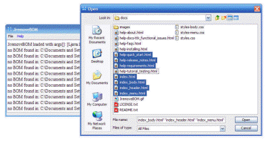

|
||
|
|
|
JremoveBOM is a
client side application written in
Java that tries to remove BOM's byte
order marks from the selected files. You can select files by using the JremoveBOM file menu, or you can right click over your selected files and Send To -> JremoveBOM. |
